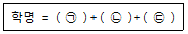
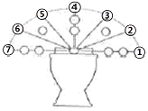
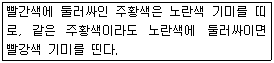

화훼장식기능사 (2012-07-22 기출문제)
1과목: 화훼장식재료
1. 리본에 대한 설명으로 틀린 것은?
- 소재의 줄기가 모이는 부분에 달아주는 것이 무난하다.
- 작품의 크기에 비례하여 리본의 폭이 적절하여야 한다.
- 리본 색의 선정은 전체 작품의 색과 전혀 관계가 없다.
- 사용한 리본의 부피만큼 꽃의 사용을 줄일 수 있다.
(정답률: 91%)

2. 서양식 꽃꽂이에서 형태 잎(form foliage)으로 장식하기에 가장 적합한 소재는?
- 엽란
- 필로덴드론
- 극락조화 잎
- 산세베리아
(정답률: 37%)
3. 화훼장식에 사용한 테이프의 용도로 틀린 것은?
- 플로랄 테이프 - 철사를 감싸거나 소재를 묶기
- 플로랄 테이프 - 코사지, 부토니아 만들 때 사용
- 방수 테이프 - 용기에 플로랄 폼을 고정
- 양면 테이프 - 줄기 고정용 격자를 만들 때 사용
(정답률: 71%)
4. 관엽식물에 관한 설명으로 틀린 것은?
- 대부분 열대 및 아열대 원산의 사철 푸른 식물이다.
- 그늘에 약하며 높은 습도를 싫어한다.
- 잎의 모양이나 색을 감사하는 식물이 다.
- 페페로미아(peperomia), 칼라데아(calathea), 몬스테라(monster) 등이 이에 속한다.
(정답률: 80%)
5. 절화 줄기를 고정하는데 사용하는 재료 중 디자인의 형태를 고려해 표현할 경우 다양한 형태의 조형이 어려워 제약이 가장 많이 따르는 것은?
- 철망
- 격자
- 침봉
- 플로랄 폼
(정답률: 68%)
6. 다음은 학명표기에 대한 표현이다. 괄호 안에 들어갈 단어의 종류 및 순서가 바르게 나열된 것은?

- 종명 - 속명 - 명명자
- 속명 - 종명 - 명명자
- 종명 - 명자 - 속명
- 명명자 - 속명 - 종명
(정답률: 65%)
7. 늘어지는 화훼식물이 아닌 것은?
- 코르딜리네(Cordyline terminalis)
- 스킨답서스(Epipermnum aureum)
- 스마일락스 아스파라거스(Asperagus asparagoides)
- 빈카(Vinca major)
(정답률: 22%)
8. 변형된 잎이 아닌 것은?
- 선인장의 가시
- 생이 가래의 잎
- 네펜데스이 포충낭
- 금잔화의 잎
(정답률: 75%)
9. 채우기(filler flower) 꽃으로 다음 중 가장 많이 사용되는 것은?
- 리아트리스
- 숙근안개초
- 장미
- 극락조화
(정답률: 87%)
10. 화훼식물의 정의로 가장 적합한 것은?
- 아름다운 꽃을 의미한다.
- 꽃과 화목류를 의미한다.
- 꽃과 풀 그리고 나무를 의미한다.
- 아름다운 꽃과 열매 등 미적인 관상을 목적으로 기르는 식물이다.
(정답률: 70%)
11. 미선나무의 분류학상 해당되는 과(科)는?
- 천남성과
- 물푸레나무과
- 장미과
- 차나무과
(정답률: 57%)
12. 광도 요구도에 따른 식물 분류에서 채송화, 맨드라미, 선인장류, 소나무 등이 속하는 것은?
- 양지식물
- 반음지식물
- 음지식물
- 수생식물
(정답률: 72%)
13. 화훼장식물 제작과정에 사용되는 도구에 대한 설명으로 옳은 것은?
- 철사는 번호가 작을수록 굵다.
- 플로랄 테이프는 풀이나 본드를 사용하여 감아준다.
- 칼은 너무 예리하므로 줄기를 자르는데 적당하지 않다.
- 디자인에 상관없이 화기는 도자기 재질이 가장 좋다.
(정답률: 89%)
14. 꽃에 대한 설명으로 틀린 것은?
- 튤립은 꽃받침이 꽃잎의 구분이 불분명하다.
- 홑꽃과 겹꽃은 한 겹 또는 두 겹 이상의 꽃잎 배열로 구분한다.
- 난초과 식물은 현화식물 중 가장 진화한 식물이다.
- 무한화서는 선단 또는 중심부의 꽃이 먼저 핀다.
(정답률: 46%)
15. 천남성과 식물인 것은?
- 나리
- 칼라
- 무스카리
- 산세베리아
(정답률: 38%)
16. 꽃꽂이 형태에서 줄기 배열을 구분할 때 한 개의 초점으로 사방으로 전개되는 줄기 배열은?
- 방사선 배열
- 교차선 배열
- 수직선 배열
- 평행선(병행선)배열
(정답률: 92%)
17. 분식물인 아프리칸 바이올렛에 대기온도보다 낮은 찬물을 급수하고 직사광선을 쬐면 일어나는 현상은?
- 잎이 싱싱해진다.
- 꽃이 싱싱해진다.
- 잎에 흰 반점이 생긴다.
- 잎이 병에 걸린다.
(정답률: 80%)
18. 줄기배열에 의한 분류에서 줄기배열이 없는 구성(freeline of arrangement)의 설명으로 옳지 않은 것은?
- 절화의 줄기가 어떤 일정한 규칙 없이 배열되어 있다.
- 줄기를 짧게 잘라 꽃송이나 꽃잎만을 사용하여 구성하는 방식이다.
- 구형으로 감은 모양, 둥글게 돌려놓은 모양 등의 여러 가지 변형이 있다.
- 플로랄 콜라주(floral collage)와 같이 편평한 물체에 붙인 것 등 의 구성이 이에 해당한다.
(정답률: 37%)
19. 동양식 꽃꽂이에서 자연묘사에 따른 형태의 설명으로 옳지 않은 것은?
- 부화형 : 수반에 물을 채우고 연꽃모양으로 꽃을 꽂는 형
- 방사형 : 중심축을 중심으로 사방으로 균일하게 꽂는 형
- 분리형 : 한 개 혹은 두 개의 수반에 분리하여 꽂는 형
- 복합형 : 두 개 이상의 수반을 복합적으로 배치하여 꽂는 형
(정답률: 68%)
20. 절화장식의 구성 형식에 의한 분류에서 형 - 선적구성(formal - linear composition)에 대한 설명으로 옳은 것은?
- 디자이너의 의도로 소재를 자유롭고 인위적으로 구성하는 형태
- 식물의 생리, 생태적인 면을 고려하여 식물이 자연 상태에서 살아있는 것과 같은 형태로 조형
- 각 식물의 소재가 가지고 있는 형태와 동적인 특성이 잘 나타나도록 형과 선을 명확히 표현
- 식물을 다른 소재와 조합하여 그 형이나 색채, 질감을 대비나 조화 등을 비사실적 기법에 의한 순수한 구성미를 가진 형태로 표현
(정답률: 86%)
2과목: 화훼장식 제작 및 유지관리
21. 결혼식장에서 남성의 상의 칼라 단추 구멍에 꽂는 몸장식용 꽃은?
- 갈란드
- 코사지
- 부토니어
- 에포렛
(정답률: 85%)
22. 스트링잉(stringing) 제작 기법에 사용되는 소재는?
- 집게, 망치
- 끈, 줄, 실
- 파이프, 철판
- 통나무, 유리
(정답률: 90%)
23. 다음 중 피어스 메소드(pierce method)를 이용할 수 없는 식물은?
- 장미
- 카네이션
- 다알리아
- 국화
(정답률: 54%)
24. 줄기배열 방식 중 교차(cross)의 설명으로 가장 거리가 먼 것은?
- 평행의 변형·발전된 형식이다.
- 적은 소재를 써서 큰 스케일의 디자인이 가능하다.
- 줄기를 꽂는 점이 겹쳐도 방향성이 좋으면 관계없다.
- 구조적 구성에서 많이 나타난다.
(정답률: 80%)
25. 절화와 절엽 등을 길게 엮은 장식물로, 길고 유연성이 있어 어깨에 걸치거나 기둥의 둘레를 감거나 난간, 문등을 장식할 수 있는 것은?
- 리스
- 형상물
- 갈란드
- 콜라주
(정답률: 86%)
26. 다음 그림의 형태로 작품을 구성할 경우 ①~⑦ 위치의 외곽선을 표현하기로 가장 적합한 소재는?

- 스프레이 카네이션
- 스프레이 장미
- 리아트리스
- 나리
(정답률: 73%)
27. 실내공간을 위한 식물 모아심기를 할 때 고려되어야 할 사항이 아닌 것은?
- 선택한 식물군의 생장속도
- 적절한 배양도의 선택
- 선택한 식물군이 동일한 정도의 수분 요구도를 가지는가의 여부
- 선택한 식물군이 동일한 색상으로 통일되어 있는지 여부
(정답률: 83%)
28. 밀레 드 플레드(mille de fleur) 디자인의 설명으로 옳지 않은 것은?
- 19세기 중반 유럽에서 시작되었다.
- 다양한 꽃과 잎, 과일이나 채소를 밀집되게 장식하는 형태이다.
- 1000송이 꽃 또는 많은 꽃이라는 뜻이다.
- 둥근형 모양이 일반적이지만 삼각형이나 사각형과 같은 형도 있다.
(정답률: 44%)
29. 다음 중 개화가 진행된 상태에서 절화해야 하는 것은?
- 거베라
- 작약
- 아이리스
- 나리
(정답률: 66%)
30. 다음 중 분식물 장식에 속하지 않는 것은?
- 갈란드
- 테라리움
- 디쉬가든
- 걸이분(hanging basket)
(정답률: 76%)
31. 화훼장식 작품 제작 시 사용되는 기법 중 그 성격이 다른 하나는?
- 밴딩(banding)
- 바인딩(binding)
- 번들링(bundling)
- 시퀀싱(sequencing)
(정답률: 83%)
32. 크리스마스 디스플레이에서 주로 이용되는 소재가 아닌 것은?
- 포인세티아
- 전나무
- 백합
- 조팝나무
(정답률: 47%)
33. 비더마이어(biedermeier) 디자인에 대한 설명으로 틀린 것은?
- 1700년대 낭만주의 시대의 디자인이다.
- 로맨틱하고 향기로운 꽃이 소재에 포함되어 낭만적인 느낌을 준다.
- 피라미드 모양의 나선형은 스위스 스타일이다.
- 단단하고 촘촘하게 구성되어서 손으로 묶는 부케로 많이 사용한다.
(정답률: 26%)
34. 절화의 줄기를 사선으로 자르는 가장 큰 이유는?
- 잘 꽂아지게 하기 위해
- 절단면의 면적을 늘려 수분 흡수면적을 넓히기 위해
- 키가 커 보이게 하기 위해
- 세균의 번식을 줄이기 위해
(정답률: 94%)
35. 장미꽃 한 송이에 다른 장미꽃 잎을 한장 한장 겹쳐서 커다란 장미꽃으로 만든 것은?
- 빅토리안 로즈(Victorian rose)
- 피어니 로즈(peony rose)
- 롤드 로즈(rolled rose)
- 카멜리아 로즈(camellia rose)
(정답률: 86%)
36. 다음 중 절화의 수명을 연장하기 위한 설명으로 틀린 것은?
- 온대성 절화인 경우 상온(15~25°C)에서 유통한다.
- 공중 습도 80~90% 수준으로 유지하는 것이 좋다.
- 서늘하고 바람을 받지 않은 곳이 보관한다.
- 수돗물을 끓인 후 식혀 침전물을 제거한 후에 사용하는 것이 수명연장에 유리하다.
(정답률: 52%)
37. 식물체내의 수분의 역할 중 식물 체온조절에 대한 설명으로 가장 적합한 것은?
- 공기습도가 포화되면 엽온은 안정된다.
- 증산작용을 통해 식물체온의 상승을 막는다.
- 세포내의 팽압 유지로 식물의 체온을 유지시킨다.
- 각종 효소의 활성을 증대시켜 식물 체온이 상승하도록 한다.
(정답률: 53%)
38. 다음 중 전후좌우 어느 방향에서도 감상할 수 있는 입체적인 디자인 형태는?
- 피라이드형
- L형
- 역T형
- 직립 기본형
(정답률: 91%)
39. 구성형식에 의한 분류에서 장식적 구성의 특징이 아닌 것은?
- 디자이너의 의도로 소재를 자유롭게 인위적으로 구성할 수 있다.
- 소재의 독자적인 매력보다는 전체적으로 풍성한 부피감과 역동적인 효과를 나타낸다.
- 전형적인 형태로는 대칭형의 방사선 줄기 배열이 있다.
- 식물의 생리, 생태적인 면을 고려하여 식물이 자연 상태에 살아있는 형태로 조형된다.
(정답률: 78%)
40. 마사징(massaging) 제작 기법을 사용하기에 가장 적합 하지 않는 소재는?
- 장미
- 칼라
- 버들
- 튤립
(정답률: 45%)
3과목: 화훼장식론
41. 코뉴코피아(cornucopia)의 설명으로 틀린 것은?
- 풍요의 의미를 갖고 있다.
- 원뿔모양의 바구니(화기)이다.
- 크리스마스 장식에 어울린다.
- 그리스 로마 신화에서 유래되었다.
(정답률: 72%)
42. 다음 아래 설명이 의미하는 것은?

- 색상대비
- 보색대비
- 명도대비
- 계시대비
(정답률: 71%)
43. 식물이 이산화탄소를 흡수할 때 공기 중의 벤젠, 포름알데히드 등의 오염물질을 흡수하여 공기를 정화하는 것은 화훼장식의 어떤 기능에 속하는가?
- 심리적 기능
- 환경적 기능
- 치료적 기능
- 교육적 기능
(정답률: 92%)
44. 다음 명도에 관한 일반적인 설명으로 가장 옳은 것은?
- 검은색을 많이 사용하면 명도는 높아진다.
- 검정을 0, 흰색을 9로 하여 10단계로 명도를 구분한다.
- 채도의 높고 낮음에 따라 명암의 효과가 나타난다.
- 명도는 빛의 반사율을 척도화하여 나타낸 것이다.
(정답률: 64%)
45. 화훼장식 대상물에 따른 질감의 표현으로 가장 잘못된 것은?
- 루나리아. 스위트피 : 우리화기처럼 투명하다.
- 팜파스그라스, 목화솜 : 순모의 털처럼 투명하다.
- 아킬레아 솔리다고 : 벨벳 같은 질감으로 부드럽다.
- 안스리움, 베고니아 : 크롬, 알루미늄처럼 금속의 질감을 가진다.
(정답률: 42%)
46. 우리나라 화훼장식을 나타내는 역사물 중 고려시대의 작품이 아닌 것은?
- 수덕사 대웅전의 수화도
- 해인사 대적광전의 벽화
- 강서대표 현실 북벽의 비천상의 꽃을 흩뿌리는 산화도
- 수월관음도
(정답률: 65%)
47. 화훼장식 디자인 요소인 공간에 대한 설명으로 틀린 것은?
- 화훼장식물을 중심으로 볼 때 공간은 물리적인 공간과 화훼장식물의 공간으로 나뉠 수 있다.
- 화훼장식 작품 안에서 공간은 양성적 공간과 음성적 공간으로 나뉠 수 있다.
- 음성적 공간은 양성적 공간에 비하여 디자이너가 의도적으로 계획한 적극적 공간이다.
- 양성적 공간은 재료가 꽉 채워진 공간이다.
(정답률: 74%)
48. 화훼장식의 기능으로 거리가 먼 것은?
- 공기정화, 습도유지, 산소발생 기능
- 차폐효과를 이용한 사생활 보호기능
- 상업공간에서 나타나는 경제적 기능
- 심리적 편안함에 따른 작업 기피 효과
(정답률: 78%)
49. 통일감을 이루는 방법이 아닌 것은?
- 동일 질감의 재료 선택
- 유사색의 사용
- 대조되는 선의 이용
- 일괄된 기술의 사용
(정답률: 74%)
50. 염색화 제작 시에 사용되는 표백제가 아닌 것은?
- 하이포아염소산염
- 구연산
- 아염소산나트륨
- 과산화수소
(정답률: 63%)
51. 오늘날에도 많이 이용되는 화관, 리스, 갈란드, 칼라 등의 절화 장식물이 일상적으로 이용되기 시작한 시대는?
- 고대 이집트
- 고대 그리스
- 로마
- 중세
(정답률: 64%)
52. 균형의 종류 중 직선과 곡선, 딱딱함과 부드러움, 강하고 약함에 대한 균형은 어떤 균형에 속하는가?
- 무게의 균형
- 재질의 균형
- 크기의 균형
- 색채의 균형
(정답률: 84%)
53. 강조(accent)에 대한 설명으로 틀린 것은?
- 주가 되는 것을 강하게 표현하는 것으로 전달내용의 주체와 핵심을 확인하고 유도하여 개성과 특성을 나타낸다.
- 대비되는 요소에 의하여 시선을 집중시킨다.
- 단색에서는 복합색의 부분이 강조되고, 명암의 대비는 약 2배 이상 차이가 날 경우 강조 효과를 볼 수 있다.
- 반복에 의해서는 강조효과 볼 수 없기 때문에 특정부위를 강조하기 위해서는 반복기법을 사용하지 않는 것이 좋다.
(정답률: 72%)
54. 화훼장식에 대한 일반적인 설명으로 틀린 것은?
- 화훼는 관상을 대상으로 하는 초본식물과 목본식물을 총괄하는 식물을 말한다.
- 꽃꽂이, 꽃예술, 화훼디자인 등에서는 절화보다는 분식물을 이용한 장식이 주류를 이루고 있다.
- 장식물의 배치공간에 따라 실내 장식과 실외장식으로 나눌 수 있다.
- 화훼장식은 화훼식물을 주 소재로 인간의 창의력과 표현 능력을 이용하여 공간의 기능 과 미적 효율성을 높여주는 장식물 제작, 설치, 유지 관리하는 기술을 말한다.
(정답률: 88%)
55. 압화의 재료로 사용하기 가장 어려운 소재는?
- 주름이 많은 꽃
- 색상의 선명도가 높은 꽃
- 구조가 간단한 꽃
- 수분함량이 적은 잎
(정답률: 87%)
56. 형태(form)의 특징과 관계가 먼 것은?
- 형태는 3차원적인 입체 공간을 말한다.
- 자연적 형태는 사실적이며, 동적이다.
- 기하학적 형태는 안정, 간결, 명료감을 준다.
- 비기하학적 형태는 아름답고 매력적이며 우아하고 여성적인 느낌을 준다.
(정답률: 33%)
57. 특별한 기술이나 도구 없이 꽃을 건조시키는 방법 중 가장 비용이 적게 들고 대량으로 만들 수 있는 방법은?
- 동결건조
- 열풍건조
- 자연건조
- 실리카겔건조
(정답률: 86%)
58. 압화 재료의 채집 시 유의사항에 대한 설명으로 거리가 먼 것은?
- 여름 한낮에는 온도가 높아 수분 증발속도가 빠르고 곧 위축되므로 한낮을 피한다.
- 손으로 거칠게 뽑아서 재료가 손상되지 않도록 꽃과 잎을 따로 담아 꽃이 눌리는 것을 방지한다.
- 비닐 주머니를 밀봉하기 전에 공기를 채워 재료가 눌리지 않게 한다.
- 채집 후 담은 비닐주머니는 양지바른 곳에 둬서 충분히 광합성을 할 수 있도록 한다.
(정답률: 76%)
59. 화훼장식 디자인에서 유사색을 사용하여 연속적으로 되풀이되는 변화를 주어 시각적인 즐거움을 주는 것은 다음 디자인 원리 중 어느 것과 관계있는가?
- 리듬
- 강조
- 균형
- 비례
(정답률: 84%)
60. 르네상스 시대는 종교적인 상징을 표현하는 화훼장식이 성행하였다. 다음 중 르네상스 시대의 대표적인 화훼장식의 형태가 아닌 것은?
- 피라미드형
- 원추형
- 플레미쉬형
- 대칭삼각형
(정답률: 49%)